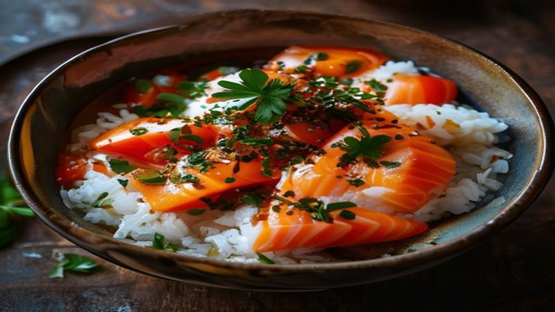

Viral TikTok Salmon Rice Bowl
The viral TikTok Salmon Rice Bowl that broke the internet! Flaked salmon, seasoned rice, avocado, and spicy mayo — it's the perfect quick lunch that tastes like sushi.
Ingredients
- 2 salmon fillets (about 6 oz each)
- 2 cups sushi rice, cooked
- 1 tablespoon rice vinegar
- 1 tablespoon soy sauce
- 1 teaspoon sesame oil
- 1 avocado, diced
- 1 cucumber, diced
- 2 tablespoons mayonnaise
- 1 tablespoon sriracha
- Nori strips, sesame seeds, green onion for garnish
- Soy sauce for drizzling
Instructions
This is the salmon rice bowl that went viral on TikTok — and for good reason! It tastes like a deconstructed sushi roll and takes just 15 minutes. Once you try it, you'll be making it on repeat.
Cook your sushi rice according to package directions. Once done, season with rice vinegar and a pinch of salt. Let it cool slightly.
Season the salmon fillets with salt and pepper. Pan-sear in a hot skillet with a drizzle of oil for 4 minutes per side until flaky. You can also bake at 400°F for 12 minutes.
Flake the cooked salmon into chunky pieces using a fork. Drizzle with soy sauce and sesame oil, and mix gently. This is the key to that incredible umami flavor!
Make the spicy mayo by mixing mayonnaise and sriracha together. Adjust the ratio to your spice preference.
Build your bowl: start with a bed of seasoned rice, top with the flaked salmon, diced avocado, and cucumber.
Drizzle generously with spicy mayo and soy sauce. Top with nori strips, sesame seeds, and sliced green onions.
This bowl is the reason TikTok food trends exist — it's THAT good! Healthy, satisfying, and tastes like you ordered it from a fancy sushi restaurant. Tag us when you make it!
Recommended Kitchen Essentials
Every great recipe starts with great tools. Here are our top picks to make cooking easier and more enjoyable:
Support Quick Bites Kitchen — When you purchase through our links, we may earn a small commission at no extra cost to you. This helps us keep creating free recipes for everyone. Thank you!